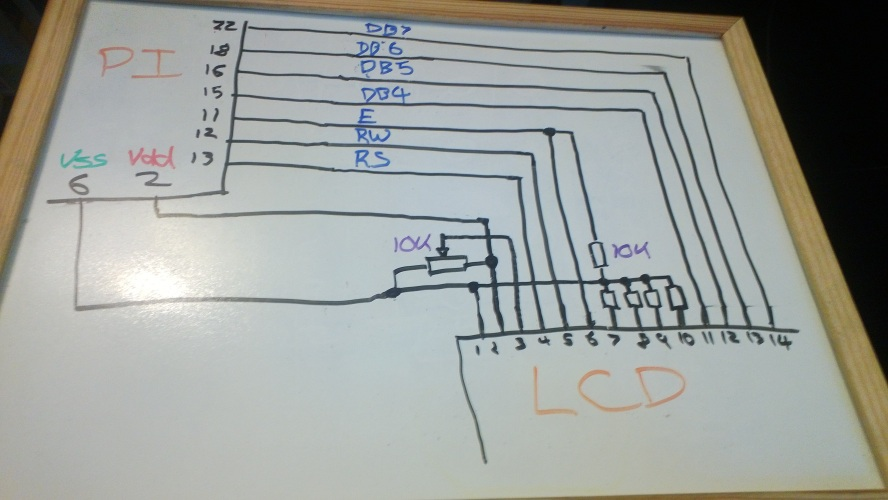
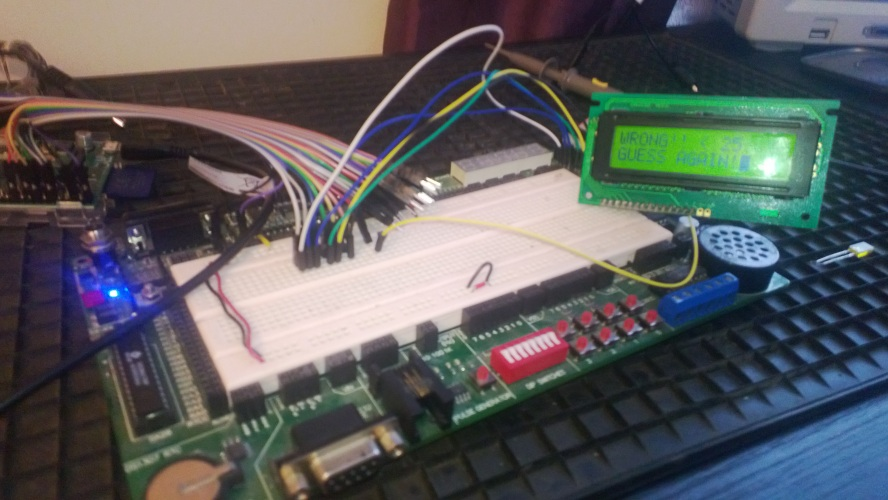

F# meets the Raspberry Pi
I got a Pi for my birthday! A great excuse to get back into electronics.
After unsuccessfully struggling to get the F# compiler to build under the stable version of mono for Debian Wheezy, I realised that F# programs work just fine if you build normally from a windows computer, throw in FSharp.Core.dll in the /bin/ and copy it over. So I have a setup now where I work with VS2012 / Sublime and sync the executable and libraries with WinScp (or indeed the Scp plugin for FAR Manager).
Next up is to get access to the hardware. I built this C library as a shared object, dumped it in with the other binaries of my project and it worked through P/Invoke with no hassle at all !
I've quite a bit of electronics experience, so after I did some basic tests that the various I/O pins could be set to output and switch from High to Low, I skipped the traditional "hello world" of hardware (blinking an LED) and figured I'd try something a little bit more ambitious. I have a little LCD screen laying around in my old gear, it's a standard LCD driven by the Hitachi HD4480 LCD Controller. You can use these in 8-bit or 4-bit mode, with the 8 bit mode needing 4 more I/O pins. I'm using the 4 bit mode because I don't really have that many pins and it's pretty easy (although a little fiddly) to use it in 4-bit mode.
I'm using a total of 7 I/O pins, E (enable), RS (switch between command and character mode), RW (I'm not actually using this right now) , and then DB4 through DB7 which are the 4 input bits (they are the higher nibble of the full 8 bits). This is the circuit :

In this schematic the Pi pins relate to the actual physical pin numbers, however in the code a mapping is needed over to what the Pi internally calls its GPIO pins. I created an enum for this purposes, only containing the pins I am using for now
1 2 3 4 5 6 7 8 |
type GPIOPins = | Pin_11 = 17u | Pin_12 = 18u | Pin_13 = 27u | Pin_15 = 22u | Pin_16 = 23u | Pin_18 = 24u | Pin_22 = 25u |
For example the physical pin 11 maps to GPIO number 17. Infact when I first hooked this circuit up and wrote all the code to perform the LCD initilization I couldn't get it to work. Thankfully I happen to have a 16 channel logic analyzer in my scope so I hooked up all the inputs, set it to a single sweep triggering on the rising edge of the Enable pin over 500ms and noticed that the RW pin was always high - strange (I neglected to take a picture of the waveforms for this post :( ). Turns out that the Pi user manual is WRONG, I have got a slightly later revision of the board where pin 13 is mapped to 27, not 21!
The next bit of code imports a couple of the functions from the C library and creates a couple of mini functions around them
1 2 3 4 5 6 7 8 9 10 11 12 |
[<DllImportAttribute("libbcm2835.so", EntryPoint = "bcm2835_init")>] extern bool bcm2835_init() [<DllImport("libbcm2835.so", EntryPoint = "bcm2835_gpio_fsel")>] extern void bcm2835_gpio_fsel(GPIOPins pin, bool mode_out); [<DllImport("libbcm2835.so", EntryPoint = "bcm2835_gpio_write")>] extern void bcm2835_gpio_write(GPIOPins pin, bool value); let fsel pin value = bcm2835_gpio_fsel(pin,value) let write pin value = bcm2835_gpio_write(pin,value) let wait (ms:int) = System.Threading.Thread.Sleep(ms) |
To use the LCD you write some bits to the data pins, then bring the Enable pin high for a few us then pull it low again ("pulse"). The LCD then does something depending on the input bits. In order to prepare it for 4-bit use I first have to send it a few 0x03 (0011) packets as per the spec indicates. Then I can switch it into 4-bit mode (0x2). From this point on, I can use all the 8-bit commands from the spec. Because I'm running in 4 bit mode I have to send the high nibble first, pulse, then send the low nibble. I wrapped some of the LCD functionality up in a F# record type (note: all this code is just a first stab, everything with hardware is inherently to do with mutating state so I won't be using a lot of the real functional features of the language just yet, but I'll see what I can do about that later)
1 2 3 4 5 6 7 8 9 10 11 12 13 14 15 16 17 18 19 20 21 22 23 24 25 26 27 28 |
type LCDCommands = | AllLow = 0b00000000 | Clear = 0b00000001 | Home = 0b00000010 | FourBit = 0b00100000 | TwoLine = 0b00001100 | DisplayOn = 0b00001100 | CursorOn = 0b00000001 | AutoIncCursor = 0b00000110 | Line2 = 0xC0 type LCD = { E : GPIOPins; RW : GPIOPins; RS : GPIOPins; DB4 : GPIOPins; DB5 : GPIOPins; DB6 : GPIOPins; DB7 : GPIOPins; } with member lcd.Pulse() = // toggles enable write lcd.E true; wait 1 write lcd.E false; wait 1 member lcd.WriteNibble(value) = // write the lower four bits to the data pins and pulses write lcd.DB7 (value > 3 &&& 0x1 = 0x1) write lcd.DB6 (value > 2 &&& 0x1 = 0x1) write lcd.DB5 (value > 1 &&& 0x1 = 0x1) write lcd.DB4 (value &&& 0x1 = 0x1) lcd.Pulse() wait 1 member lcd.WriteByte(value) = lcd.WriteNibble(value > 4) // write high nibble first lcd.WriteNibble(value) member lcd.Command = int > lcd.WriteByte |
I have captured some of the LCD commands in another enum - some of these have to be OR'd together as per the spec. I've just encoded the ones I'm going to use. The there's the pulse which toggles enable with a tiny delay. Because I'm in 4 bit mode I'll always be writing nibbles with a pulse at the end - the WriteByte function simply writes the high nibble first then the low nibble as the spec indicates. The last function is just a wrapper so I can directly use the LCDCommand enum.
1 2 3 4 5 6 7 8 9 10 11 12 13 14 15 16 17 18 |
member lcd.Initialize() = // I am only using the (annoyingly fiddly) 4 bit mode // assume 1000ms or so has passed since program start up // make sure pins are set to output fsel lcd.E true; fsel lcd.RW true fsel lcd.RS true; fsel lcd.DB4 true fsel lcd.DB5 true; fsel lcd.DB6 true fsel lcd.DB7 true // zero them all out lcd.Command LCDCommands.AllLow // to start with we are only writing special wakeup nibbles lcd.WriteNibble(0x3); wait 5 // as per spec, first call has a 5ms wait lcd.WriteNibble(0x3); wait 1 lcd.WriteNibble(0x3); wait 1 // now set into 4 bit mode and send 8 bits in 2 nibbles from now on lcd.WriteNibble(0x2) lcd.Command(LCDCommands.FourBit ||| LCDCommands.TwoLine) // set 5x8 mode 2 lines lcd.Command(LCDCommands.DisplayOn ||| LCDCommands.CursorOn) // switch it on lcd.Command(LCDCommands.AutoIncCursor) |
This is the startup sequence - set all the pins to Output, zero them all out, and then follow the startup sequence as per the spec. initially I have to just use nibbles, until the wake-up sequence is complete, then I can set it to 4-bit mode and use full byte commands. Once the display is in 4-bit mode I switch it to 5x8 mode with 2 lines and switch the screen on with a flashing cursor and so on.
1 2 3 4 5 |
member lcd.WriteText(text:string,clear) = if clear then lcd.Command(LCDCommands.Clear) write lcd.RS true; wait 1 Encoding.ASCII.GetBytes(text) |> Seq.iter(int > lcd.WriteByte) write lcd.RS false; wait 1 |
Lastly a function to output some text. To do this you have to set the LCD into character output mode by pulling RS high; then you can send ASCII codes and the LCD will print them.
Pulling this all together I wrote that classic silly number-guessing game you write when learning to program, with the output on the LCD:
1 2 3 4 5 6 7 8 9 10 11 12 13 14 15 16 17 18 19 20 21 22 23 24 25 26 27 28 29 30 31 32 33 34 35 36 37 38 39 40 41 42 43 |
[<EntryPoint>] let main argv = try match bcm2835_init() with | true -> let lcd = { E = GPIOPins.Pin_11; RW = GPIOPins.Pin_12; RS = GPIOPins.Pin_13; DB4 = GPIOPins.Pin_15; DB5 = GPIOPins.Pin_16; DB6 = GPIOPins.Pin_18; DB7 = GPIOPins.Pin_22 } wait 1000 lcd.Initialize() let rec loop number attempts = try let guess = Console.ReadLine() |> Int32.Parse if guess = number then lcd.WriteText("CORRECT!!",true) lcd.WriteByte(0xC0); lcd.WriteText("YOU WIN!",false) elif attempts + 1 > 5 then lcd.WriteText("WRONG!!",true) lcd.WriteByte(0xC0); lcd.WriteText("YOU LOSE!!",false) else lcd.WriteText("WRONG!! ",true) lcd.WriteText((if number < guess then "< " else "> ") + guess.ToString(),false) lcd.WriteByte(0xC0); wait 2 lcd.WriteText("GUESS AGAIN!",false) loop number (attempts + 1 ) with | _ -> printfn "Number not reconigsed. Try again" loop number attempts lcd.WriteText("Guess a number",true) lcd.WriteByte(0xC0); wait 2 lcd.WriteText("0 <---> 50",false) loop (System.Random(DateTime.Now.Millisecond).Next(51)) 0 | false -> printfn "failed to init" with | ex -> printfn "exception thrown : %s" <| ex.ToString() Console.Read() |
Here's a pic of it working ..

Cool! This was just a silly project to test everything is working properly - I can take over the world now.